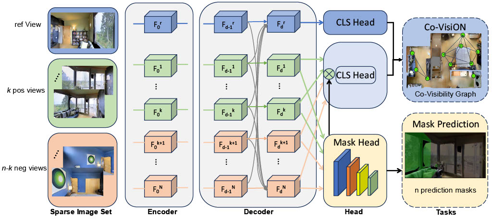

Humans exhibit a remarkable ability to recognize co-visibility—the overlapping regions visible in multiple images—even when these images are sparsely distributed across a complex scene. This capability is foundational in 3D vision and robotic perception. Despite significant progress in vision learning, it remains unclear whether current vision models have reached human-level proficiency in co-visibility analysis. In this work, we introduce the Co-Visibility ReasONing (Co-VisiON) benchmark, designed to directly evaluate co-visibility reasoning on sparse image sets across over 1000 indoor scenarios. Our experiments reveal that while co-visibility is typically treated as a low-level feature matching task, it poses a significant challenge for existing vision models under sparse conditions. Notably, a proprietary vision-language model outperforms all purely vision-based approaches, with all models lagging substantially behind human performance. This gap underscores the need for more than basic pairwise vision processing—it calls for a comprehensive spatial understanding through high-level reasoning across multiple views. Inspired by human visual cognition, we propose a novel multi-view baseline, Covis, which achieves top performance among pure vision models and narrows the gap to the proprietary VLM. We hope our benchmark and findings will spur further advancements in developing vision models capable of robust, high-level reasoning in challenging, sparse environments.

Method Overview: TBD